Dark backgrounds made some text difficult to read.
PARTICIPATORY DESIGN · LINKÖPING UNIVERSITY · 2023
Engaging Explorations
A participatory design project with Östergötlands Museum, creating a playful activity booklet that helps families explore, interact and learn together.
My roleProject Coordinator · Visual Designer
Duration8 weeks
Target audienceFamilies with children
ContextParticipatory Design course

THE OPPORTUNITY
Turn a museum visit into an active family adventure.
Östergötlands Museum wanted to deepen visitor engagement, especially for families with children. Although interactive elements already existed, younger visitors needed more reasons to explore, participate and stay curious.
Our response was an Activity Booklet that brings together a museum introduction, trivia, a scavenger hunt, an event calendar, visitor feedback and a map—one simple object connecting the whole visit.
DOCUMENTARY · THE FULL PROCESS
See how the booklet came to life.
From ideation and stakeholder conversations to prototyping and the final outcome, the documentary follows our collaborative design process.
01IdeateAlign with the museum
02PrototypeMake and test the booklet
03RefineTurn feedback into design
01 · IDEATION
Choosing a direction together.
We met with the museum’s contact person, explored its engagement needs and developed three concepts with clear purposes, audiences and requirements. The stakeholder selected the activity booklet as the strongest direction.
03
concepts presented
Each concept connected a visitor need with a practical museum experience.
01
direction selected
A booklet that combines navigation, play, learning and feedback.
02 · PROTOTYPE & TEST
Making the experience tangible.
A feedback flyer helped us learn which activities visitors preferred—from trivia and scavenger hunts to labyrinths and exhibition checklists. We used those insights to create the first booklet, then tested it with the target audience in a participatory workshop.

VERSION 01
Low-fidelity booklet
1 / 12
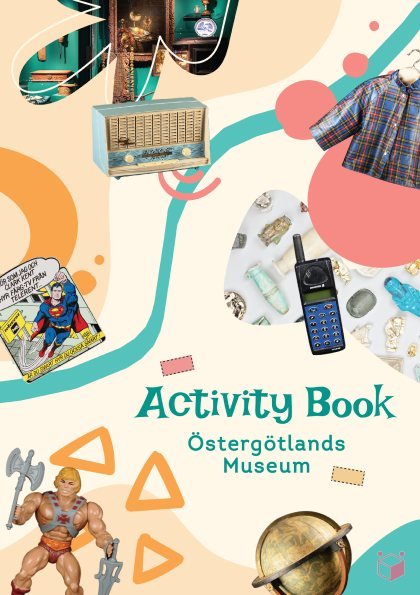
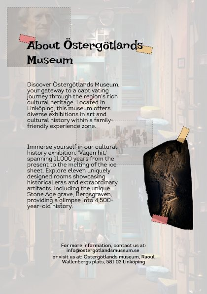
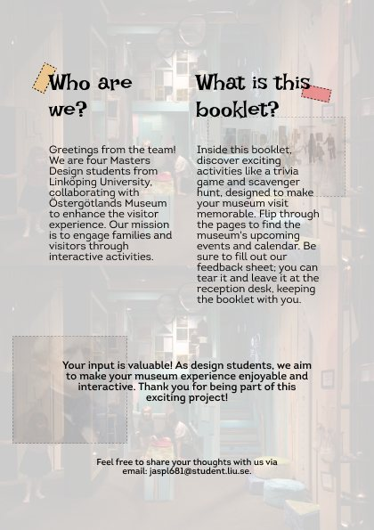
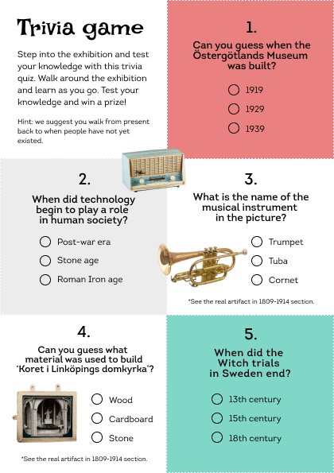
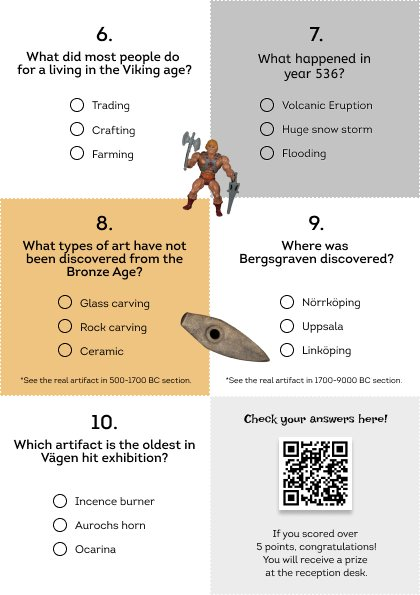
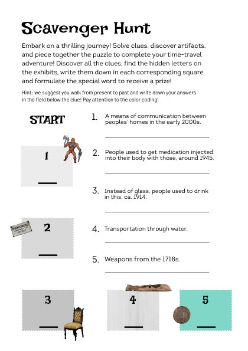


WHAT THE WORKSHOP REVEALED
Four signals shaped the next version.
The trivia QR code could make cheating too easy.
Printing reduced the legibility of the body copy.
Families wanted more activities, including the art section.
03 · DESIGN REFINEMENT
Small visual decisions made the booklet easier to use.


01
Better contrast through a lighter background.
02
Clearer navigation with optimized map type and sizing.
03
More visible trivia through distinct content boxes.
04
Print-safe margins refined after the proof print.
05
Stronger identity with the museum logo.
06
A new QR method designed to discourage cheating.
07
Improved line height for easier reading.
VERSION 02
High-fidelity booklet
1 / 12
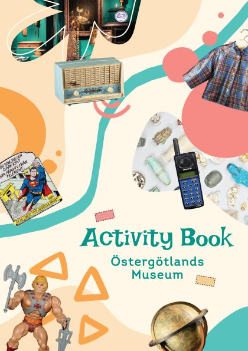
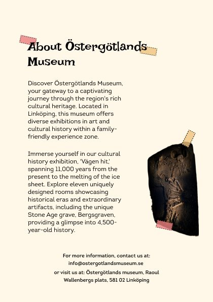
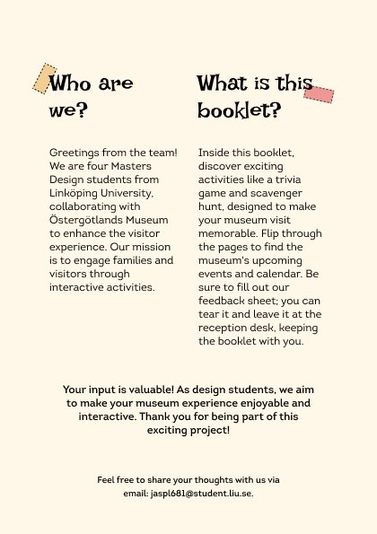
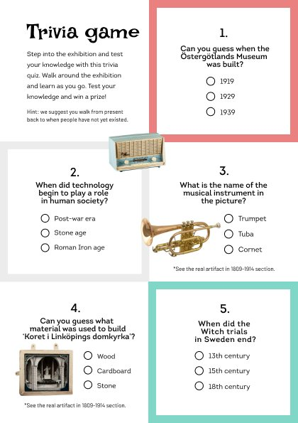
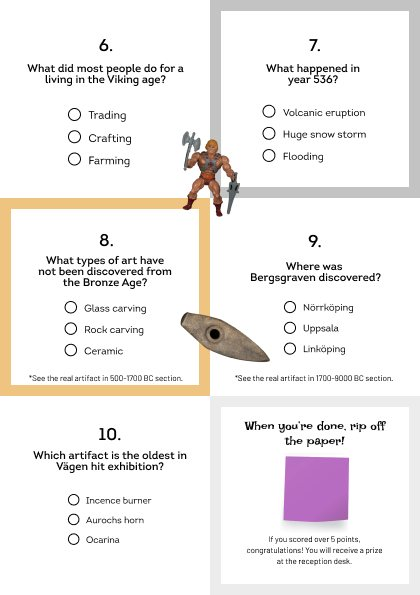

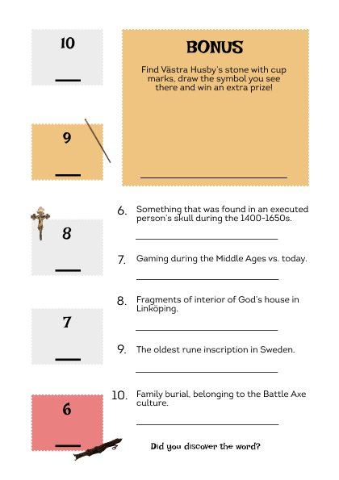
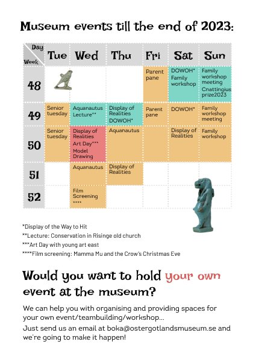
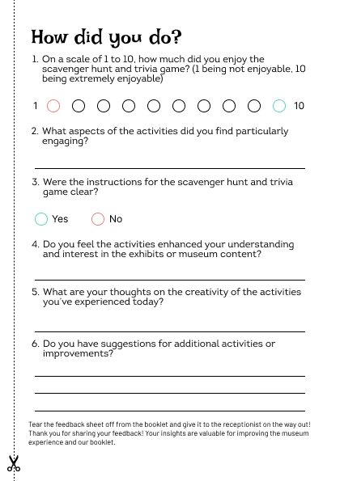
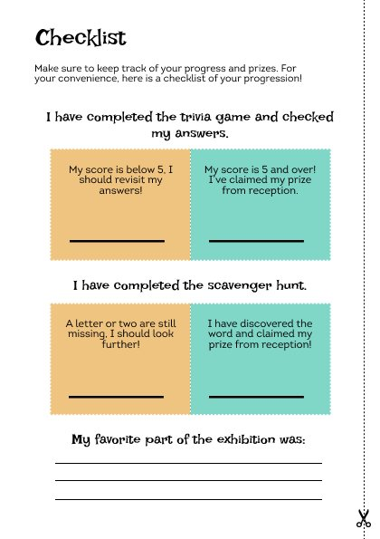
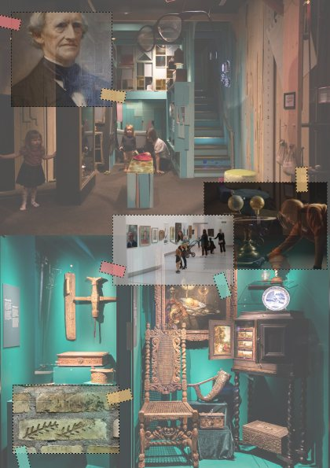
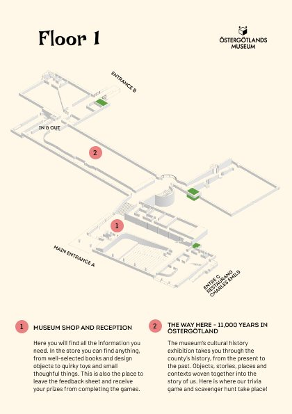
OUTCOME
A booklet families could experience together.
Designed to encourage families with children to participate.
Shared activities supported a more engaging museum visit.
Play created an approachable way to explore history.
The museum stakeholder responded positively to the outcome.
What I learned
User feedback is essential, and diverse expertise makes participatory design stronger.